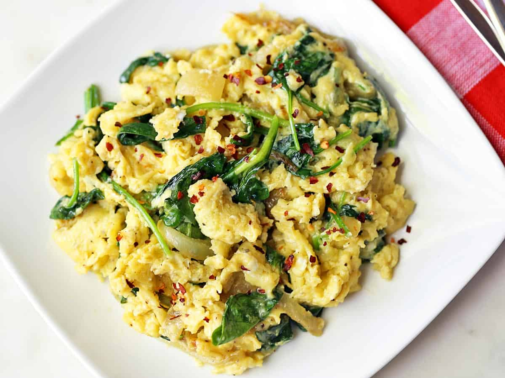
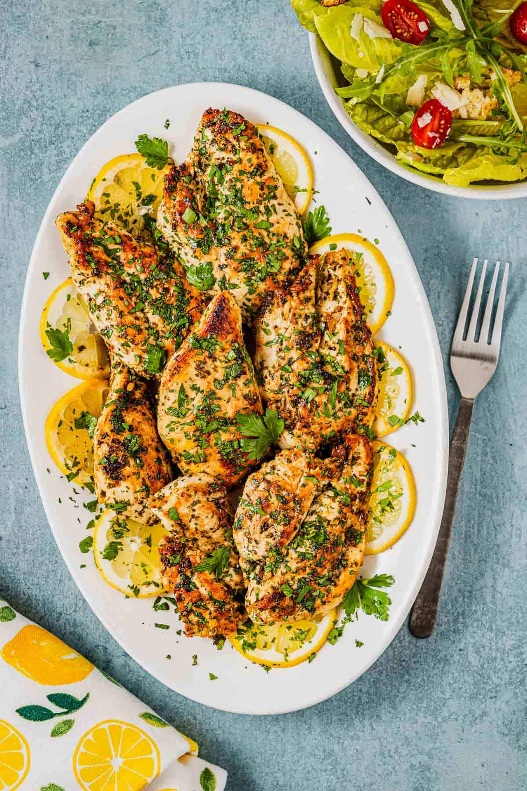

Odin Recipes
Spinach Scrambled Eggs

If breakfast is the most important meal of the day? WHy not make it nutritionally dense and something you can enjoy.
This recipe is not only good for you it takes 10 minutes to make. Just follow along with these instructions and watch it
all come together
Ingredients
- eggs
- salt
- pepper
- spinach
- shredded cheddar cheese
- butter
Steps
- Whisk together 3 eggs,cheese, and spinach
- Season with salt and pepper
- Add butter to pan on medium-high heat
- Once hot, add egg mixture cook for 5-10 minutes
- Plate and enjoy!
Spinacheggscramble
Garlic Lemon Chicken Breast

This recipe will require some planning ahead of time. You will have to marinate the chicken overnight
to get the best results, but it will be so worth it if you do. If marinating sounds intimidating
to you just follow these easy steps and you'll be done before you even know we started.
Ingredients
- Chicken breast
- lemon
- olive oil
- oregano
- basil
- salt
- pepper
- garlic
Steps
- Mince Garlic
- Add chicken to large bowl
- Add garlic,chicken, and seasonings to bowl
- Place lid on bowl and set in the fridge
- When ready to cook, place chicken in pan on medium to medium-high heat
- Cook 3-5 minutes per side,until chicken is browned
Lemonchickenbreast